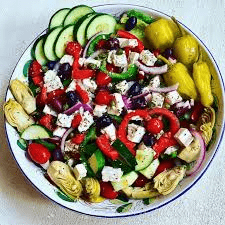

Greek Salad Recipe

Ingredients:
- 2 large cucumbers, diced
- 4 medium tomatoes, diced
- 1 red onion, thinly sliced
- 1 green bell pepper, diced
- 1/2 cup Kalamata olives
- 1/2 cup crumbled feta cheese
- 2 tablespoons extra virgin olive oil
- 1 tablespoon red wine vinegar
- 1 teaspoon dried oregano
- Salt and pepper to taste
Instructions:
- In a large bowl, combine the cucumbers, tomatoes, red onion, bell pepper, Kalamata olives, and feta cheese.
- In a small bowl, whisk together the olive oil, red wine vinegar, dried oregano, salt, and pepper.
- Pour the dressing over the salad and toss gently to combine.
- Let the salad sit for a few minutes to allow the flavors to meld together.
- Serve and enjoy!
Back to Main page
Copyright © Recipe Blogs